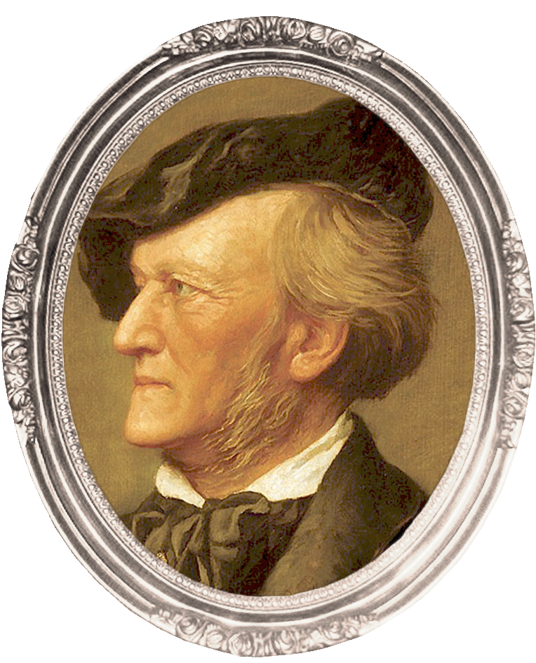
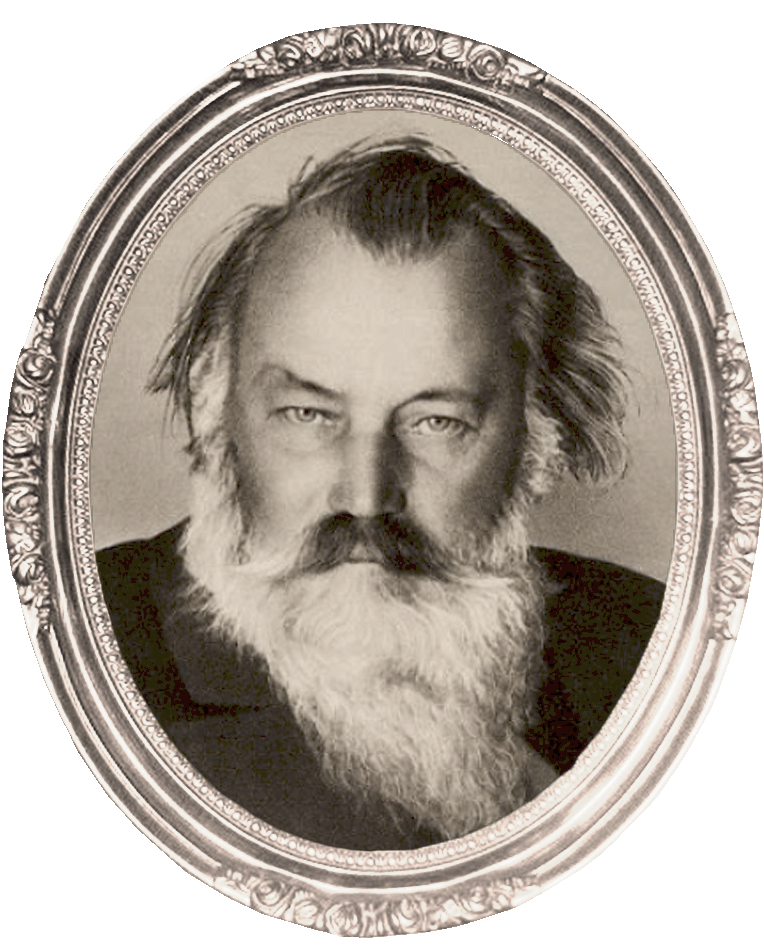

ROMANTIC
1810 ~ 1890

Wilhelm R. Wagner
(1813 ~ 1883)
독일의 작곡가, 극작가, 극 연출가, 지휘자, 음악 비평가 및 저술가인 바그너는 독일의 오페라에 있어서 대표적인 작곡가 중의 하나이며, 19세기 유럽의 음악 및 문화 전체에 있어서도 독보적인 예술가 중의 하나였다. 음악에 있어서 독일의 낭만주의 오페라의 전성시대를 열었으며, 음악극이라는 새로운 장르를 창시하였다. 활동후기에는 풍부한 반음계적 음악언어를 발전시켜, 후대의 작곡가들로 하여금 조성을 약화시키고 결국에 파기하도록 하는 견인차 역할을 했다.


Johannes Brahms
(1833 ~ 1897)
독일의 작곡가이자 피아니스트, 첼리스트, 바이올리니스트, 지휘자인 바그너는 당대 낭만주의 음악의 선도적 존재였다. 브람스는 여러 피아노곡, 실내악, 교향악, 성악, 합창곡을 작곡했다. 피아니스트로서 그는 여러 자신의 작품을 초연했으며, 당대의 뛰어난 연주자로도 각광받았다. 브람스의 작품은 독일 낭만파 중에서 비교적 보수적인 경향을 갖고 있다. 그의 작품은 고전파적인 양식 위에 서서, 중후하고 북독일적인 맛을 지니며, 또한 아름다운 서정성도 갖고 있다.
PHILOSOPHY IN MUSIC